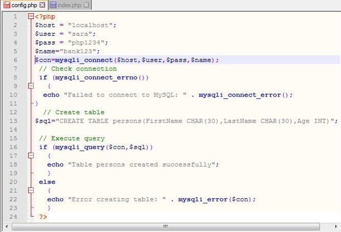

- معرفی دیتابیس رابطه ايmysql
- MySQLچیست و چه کاربردي دارد؟
- ساختار کلی و نحوه دسته بندي اطلاعات در پایگاه داده
- مدیریت پایگاه داده MySQLباphpMyAdmin
- ارتباط PHPبا پایگاه دادهMySQL
- مرحله اول : ایجاد پایگاه داده MySQLبا استفاده از phpmyadmin
- مرحله دوم : مهمترین توابع و دستورات کدنویسی ارتباط MYSQLبا PHP
فهرست مطالب
معرفی دیتابیس رابطه ايmysql
با گسترش وب، زبان هاي برنامه نویسی تحت وب و همین طور انتقال و شبیه سازي اکثر ابزارها به صورت برنامه هاي تحت وب، احتیاج شدیدي به یک پایگاه داده اي احساس شد که بتواند اطلاعاتی که توسط برنامه هاي تحت وب مورد نیاز است را ذخیره و بازیابی کند. MySQL، یک نمونه از این پایگاه داده هاي ارائه شده بود. MySQL یک سیستم مدیریت پایگاه داده رابطه اي(RDBMS) است که امکان ذخیره سازي، جستجو ،مرتب کردن و بازیابی داده ها را از طریق وب فراهم می کند.ذخیره اطلاعات به صورت دسته بندي شده و دسترسی سریع به آنها ضرورتی بود که باعث ایجـاد سیسـتم هـايمــدیریت پایگــاه داده رابطــه ايRelational Database Management System یــا بــه اختصار(RDBMS) در دنیاي برنامه نویسی و به تبع برنامه نویسی وب شد، اگر یـک برنامـه نـویسPHP باشیم و بخواهیم به طور مثال سرویس فرهنگ لغات آنلاین طراحی کنیم، قاعدتا اولین مشکلی کـه بـا آن روبـروخواهیم شد این است که لغات را در کجا ذخیره و چگونه آنها را فراخوانی کنیم، چگونه کلمه مورد نظر کـاربر را ازبین کلمات موجود جستجو کرده و نتیجه را پس از پردازش به صفحه مرورگـر ارسـال نمـائیم و سـوالاتی از ایـندست، لذا ناگزیر بحث استفاده از یک سیستم مدیریت پایگاه داده جهت ذخیره، جستجو، انتخاب، ویرایش و حذف اطلاعات مطرح می شود که در وب و بخصوص بـراي برنامـه نویسـانPHP اولـین و شـاید بهتـرین انتخـاب MySQL باشد، اینکه چرا و چگونه از MySQL در کدنویسیPHP خود استفاده کنیم، مبحثی است که در سلسله مطالب مقدماتی پیش رو به آن خواهیم پرداخت.
MySQLچیست و چه کاربردي دارد؟
قبل از هر چیز بهتر است به این سوال پاسخ دهیم کهMySQL چیست و چه کاربردي دارد؟ در پاسخ می توان گفت کهMySQL یکی از پرکاربردترین سیستم هاي متن باز (Open-source) مدیریت پایگاه داده است که توسط شرکت سوئديMySQL AB ایجاد و اولین نسخه آن در سال 1995 معرفی شد (مالکیت شرکت MySQL AB در حال حاضر در اختیار شرکتOracle است)، SQL در واقع زبانی است که براي استفاده در سیستم هاي مدیریت پایگاه داده رابطه اي(RDBMS) طراحی شده و عبارتMySQL اشاره به این زبان دارد ،در واقعMySQL براي اجراي دستورات ما مانند دستور ساخت جدول، ذخیره، جستجو، انتخاب، ویرایش و حذف اطلاعات از زبانSQL استفاده می کند و لذا آشنایی قبلی باSQL می تواند فراگیري کار باMySQL را بیش از پیش ساده کند، از آنجایی که این سیستم مدیریت پایگاه داده جزئی از خانواده موسوم بهLAMP مخفف (Linux, Apache), MySQL, Perl/PHP/Pythonاست لذا بیشترین سازگاري و کارایی را در این حیطه دارد و انتخاب اول برنامه نویسان PHP به حساب می آید، باMySQL می توانیم اطلاعات مورد نظر را در دیتابیسی که در سرور ایجاد می کنیم ذخیره کرده آنها را بر طبق اهداف برنامه به صورت حرفه اي دسته بندي و هر زمان نیاز بود در اطلاعات جستجو نموده و مقادیر دلخواه را استخراج نمائیم، این قابلیت ها براي طراحی برنامه هاي داینامیک وب جزء ملزومات اولیه هستند وMySQL به خوبی این نیازها را پوشش می دهد، استفاده سایت هاي معروفی مانندFlicker ،Twitter ،Facebook ، Googleو YouTube از این پایگاه داده نشان دهنده حرفه اي و کارآمد بودن آن است.ساختار کلی و نحوه دسته بندي اطلاعات در پایگاه داده
همان طور که اشاره شد پایگاه داده جزء کلیدي در برنامه هاي کاربردي تحت وب محسوب می شود و لذا شناخت ساختار کلی و نحوه دسته بندي اطلاعات در آن اهمیت ویژه اي دارد، درMySQL هر پایگاه داده (Database) یک نام بخصوص دارد و حداقل از یک جدول(Table) اطلاعاتی تشکیل شده است، جداول نیز خود شامل زیر مجموعه هایی هستند که به آنها ستون(Column) می گویند که سطرهاي اطلاعات (Rows) را در خود جاي می دهند، به طور مثال دیتابیس زبان هاي برنامه نویسی می تواند شامل جدول برنامه نویسی دسکتاپ، برنامه نویسی موبایل و برنامه نویسی وب باشد، به همین صورت هر جدول می تواند شامل ستون(Column) و سطرها (Rows) باشد، سطرح ها در واقع همان ردیف هاي اطلاعات هستند که در جدول براي هر ستون ذخیره می شوند (تصویر زیر:)در نمونه ساختار فوقprogramming نام دیتابیس ،desktop نام جدول وname ، idو status ستون هاي دیتابیس هستند که سطرهاي اطلاعاتی را شامل می شوند (نام دیتابیس، جدول و ستون ها در مثال فرضی و به تعداد دلخواه می باشند).
مدیریت پایگاه داده MySQLباphpMyAdmin
برنامه نویسانPHP معمولا از دو طریق می توانند به سیستم مدیریت پایگاه داده MySQL دسترسی داشته باشند، با استفاده از برنامهphpMyAdmin و همچنین با کدنویسیPHP ، برنامهphpMyAdmin جهت مدیریت به اصطلاح دستیMySQL و اعمال تغییراتی مانند ساخت پایگاه داده جدید، ساخت جداول، ستون ها ،تغییر ویژگی هاي جداول و ستون ها و مواردي از این دست کاربرد دارد و تقریبا هر کاربري با هر سطح از آشنایی با برنامه نویسی می تواند با محیط آن ارتباط برقرار کرده و نیازهاي خود را مرتفع کند ،phpMyAdmin در واقع برنامه اي نوشته شده بهPHP با هدف مدیریت پایگاه داده با استفاده از رابط کاربري ساده و تحت مرورگر است تا هم انجام موارد اولیه، برپایی پایگاه داده و اعمال تغییرات بعدي در آن آسان و روند کار تسریع شود و هم کاربران مختلف با هر سطح از آشنایی باPHP بتوانند بدون دغدغه و احیانا نگرانی از سردرگمی، با محیط MySQL ارتباط برقرار کنند.یادآور می شویم که این برنامه معمولا به صورت از پیش نصب شده در سرورهاي لینوکس یا برنامه هاي سرور مجازي(Localhost) وجود دارد و کافی است از پنل مدیریت هاست سایت یا از طریق آدرس
localhost/phpmyadminدر لوکال به آن دسترسی پیدا کنیم، در برنامه هاي سرور مجازي معمولا با نام کاربريroot و بدون پسورد می توانیم وارد محیط برنامهphpMyAdmin شویم.
ارتباط PHPبا پایگاه دادهMySQL
همان طور که اشاره شد با کدنویسیPHP می توانیم به پایگاه دادهMySQL دسترسی داشته و بین کدهاي PHP با سیستم مدیریت پایگاه دادهMySQL ارتباط برقرار کنیم، این قابلیت باعث می شود بتوانیم برنامه هاي حرفه اي تحت وب که معمولا نیازمند نگهداري داده ها در یک بانک اطلاعاتی مطمئن هستند را طراحی و عملیاتی از قبیل ذخیره سازي، دسته بندي، جستجو، انتخاب، ویرایش و حذف ردیف ها را به صورت سیستماتیک و با کمک دستورات برنامه نویسی انجام دهیم، به طور مثال کاربر می تواند در فیلد جستجوي برنامه تحت وب عبارت مورد نظر خود را وارد کرده و ما با دستوراتPHP بهMySQL می گوییم که ردیف هاي متناسب با کلمه درخواستی کاربر را انتخاب و به عنوان نتیجه به مفسرPHP برگرداند، در ادامه نتیجه دریافتی را با کدنویسیPHP تجزیه تحلیل نموده و خروجی نهایی را مطابق هدف برنامه به کاربر نشان دهیم، این ارتباط با کمک برنامه هایی تحت عنوان اکستنشن(Extension) صورت می گیرد، اکستنش ها در واقع بسته هاي نرم افزاري هستند که به هستهPHP امکان انجام عملیات هاي خاص مانند اتصال و مدیریت پایگاه داده را می دهند، درPHP براي این منظور پیشتر از اکستنشن قدیمیMySQL استفاده می شد که در نسخه 7PHP منسوخ و به صورت پیش فرض حذف شده است و توصیه می شود براي برنامه هاي جدید اکستنشنMySQLi یاPDO را جایگزین آن نمائیم.
PHP ‹===> MySQL
- MySQL (Deprecated) * منسوخ شده
- MySQLi (Recommended) * توصیه شده
- PDO (Recommended) * توصیه شده
مرحله اول : ایجاد پایگاه داده MySQLبا استفاده از phpmyadmin
گام اول: اماده سازي پایگاه داده
یک پوشه جدید در پوشهhtdocs نرمافزارXampp ایجاد کنید و نام آن راcms بگذارید. حالا در پوشه cms یک فایل به نامconfig.php ایجاد کنید. این فایل در واقع تنظیمات مربوط به سیستم ما را نگهداري خواهد کرد .همچنین از طریق این فایل به بانک داده متصل خواهیم شد. خوب اگه دقت کرده باشید در همه سایت ها یک فایلconfig وجود دارد که به شما کمک می کند در صورت انتقال سایت به هاست دیگر بتوانید نام پایگاه داده و کلمه عبور و نام کاربري پایگاه داده را به آسانی تغییر دهید و لازم نباشد در هر قسمت که به بانک وصل شدید ان را تغییر دهید.خوب در این بخش یک فایل به نامconfig.php می سازیم ، و در آن نام هاست و همچنین نام پایگاه داده و همچنین کلمه عبور و نام کاربري پایگاه داده را قرار می دهیم . البته در مرحله دوم که کدهاي php را می نویسیم کدهاي داخل این فایل را بررسی می کنیم.در کل باید بدانید قصد داریم یک پروژه بسازیم که با بانک اطلاعاتی MYSQL ارتباط داشته باشد و بتوان با استفاده از آن مطالب جدیدي را در بانک داده ذخیره سازي کرد. هدف ما ایجاد بخشی براي ارسال مطلب، بخشی براي ویرایش مطالب ارسال شده، امکان حذف مطالب ارسال شده و نیز نمایش مطالب ارسال شده است. چهار عمل اصلی در ارتباط با بانک هاي داده وجود دارد که عبارتند از ایجاد، بروزرسانی ، خواندن و نهایتا حذف.
گام دوم : اجراي phpmyadmin
باید بانک اطلاعاتی مورد نظرمان را ایجاد کنید. پس از اجرايXampp در پنل مدیریت این نرمافزار سرویس MySQL را نیز همانند سرویسApache اجرا کنید.حالا مرورگر خود را باز کرده و به آدرس http://127.0.0.1/phpmyadmin بروید .در این بخش شما می توانید بانک هاي اطلاعاتی سرور محلی خود را مشاهده، ایجاد و حذف کنید. پس از اجراي آدرس فوق باید با صفحه اي مانند زیر مواجه شوید.
گام سوم: ساخت پایگاه داده
پس از آن که به بخشphpMyAdmin وارد شدید، بر روي زبانهDatabases کلیک کرده و عبارتی را به عنوان نام پایگاه داده در کادر مربوط وارد کنید و سپس دکمهCreate را فشرده تا پایگاه داده مورد نظر ایجاد شود.گام چهارم: ایجاد نام کاربري
به منظور بازگشت به صفحه اصلی بر روي آیکونphpMyAdmin (در گوشه سایت قسمت بالا سمت چپ) کلیک نموده و سپس زبانه Users را انتخاب کنید. در ادامه براي ایجاد یک نام کاربري چنین عمل کنید:بر رويAdd User کلیک کنید.
در پنجره موجود، نام کاربري و رمز عبور مورد نظرتان را تعیین کنید.
نیاز است تا در فیلد مربوط بهHost در اکثر مواردlocalhost لحاظ شود، مگر آن که خدمات میزبانی وب مقدار دیگري را براي آن تعیین کرده باشد. مجددا متذکر می شویم که براي تعیین نام کاربري و رمز عبور نیز به هیچ عنوان از کلمات ساده و قابل حدس استفاده نکنید. گفتنی است که یک رمز عبور قوي، متشکل از حداقل هشت کاراکتر شامل حروف الفبا، کاراکترهاي عددي و کاراکترهاي ویژه است. نمونه اي از یک رمز عبور خوب می تواند“!Fi4bY_2z?” باشد! در قسمت پایین صفحه به صورت زیر می توان براي کاربران دسترسی هایی رو اختصاص دهیم که با انتخاب هر یک آن عمل یا دسترسی به کاربر اختصاص داده می شود.که بهتر است تمامی دسترسی ها به کاربر داده شود.
در انتهاي کار بر روي دکمهCreate User و یاGo کلیک کرده تا کاربر ایجاد شود .
گام پنجم : تخصیص دسترسی ها
به بخشUsers بازگشته و در سطر مربوط به نام کاربري که ایجاد کردید ( در لیست موجود است) بر روي Edit Privileges کلیک کنید،تا اگر نیاز به تغییر یا دادن دسترسی دیگر باشد دسترسی هایی به کاربر تعریف شده ، اعطا شود تا بتواند به پایگاه داده اي که ایجاد کرده ایم متصل شود.گام ششم :انتخاب پایگاه داده براي user
بعد از ایجاد user ودادن دسترسی و ویرایش دسترسی با انتخاب دکمه Edit Privileges در پنجره مربوطه زبانه Database را انتخاب کرده در بخش Database-specific Privileges و از کادر کشویی موجوددر جلوي گزینه Add privileges on the following database پایگاه داده اي را که پیش تر (در گام سوم) ایجاد کردید، برگزینید. مشاهده خواهید نمود که صفحه، بازخوانی مجدد(Refresh) می شود.گام هفتم : ایجاد جدول
سپس با انتخاب پایگاه داده پنچره زیرباز می شود . در این پنجره نام جدول موردنظري که می خواهید بسازید را تایپ کنید و سپس رويGo کلیک کنید.سپس وارد پنچره زیر می شوید . در این قسمت در بخشName نام فیلد در بخش Type نوع فیلد و در بخشLength/Values طول فیلد یا مقدار را وارد می کنید و رويsave کلیک می کنید.بهتر است یک فیلد به نامid و نوعint در همه جداول شما وجود داشته باشد.
من یک جدول با سه فیلد id , name , familyساختم . که idاز نوع intو دو فیلد name , family از نوع varcharاست.
مرحله دوم : مهمترین توابع و دستورات کدنویسی ارتباط MYSQLبا PHP
گام اول : کدهاي لازم براي ایجاد ارتباط با سرور پایگاه داده MySQLبا استفاده از روش رویه اي mysqli
با استفاده از تابع mysqli_connect در محیط php به پایگاه داده mysql متصل می شویم . این تابع چهار آرگومان ورودي دارد که به ترتیب آدرس میزبان بانک داده، نام کاربري بانک داده ،رمزعبور کاربر بانک داده و نام پایگاه داده هستند. خروجی این تابع نیز یاtrue یاFalse خواهد بود.1 mysqli_connect(host,user,pass,name);کد بالا حالت کلی(Syntax) تابع را نمایش میدهد که به صورت زیر در کدنویسی استفاده میشود:
فایلconfig.php را باز می کنیم و کد زیر را در آن قرار می دهیم:
در کد بالا ابتدا 4 متغیر تعریف کرده و آن ها را مقداردهی کردیم. براي اتصال به بانکاطلاعاتیmysql در php نیاز به 4 مشخصه خواهید داشت. آدرس میزبان بانک داده که در اینجا متغیرdbhost است، نام کاربري بانک داده که در اینجا dbuser است، نام بانک داده که در اینجاdbname است و نهایتا رمزعبور کاربر بانک داده که در اینجاdbpass است. در بیشتر مواقع آدرس میزبان بانک داده همانlocalhost خواهد بود. در نرم افزار زمپ نام کاربري تمام بانک هاي داده اي که میسازیمroot است و این کاربر رمزعبور ندارد و به همین دلیل مقدارdbpass را خالی گذاشتهایم. نام بانک داده نیز همان نامی خواهد بود که در هنگام ساختن بانک اطلاعاتی مورد نظر خود تعیین کردهاید و در این پروژه نام تعیین شده ماcms بود .
حال باید با استفاده از تابع mysqli_connect به بانک داده متصل شویم. این تابع سه آرگومان ورودي دارد که به ترتیب آدرس میزبان بانک داده، نام کاربري بانک داده و رمزعبور کاربر بانک داده هستند. خروجی این تابع نیز یاtrue خواهد بود یاFalse .در کد بالا ما خروجی این تابع را در متغیرconnect_db ذخیره می کنیم و سپس با یک دستورif بررسی کردهایم که اگر اتصال به درستی برقرار شد پیام مناسب به کاربر نمایش داده شود و اگر اتصال انجام نشده بود پیام خطاي عدم اتصال به بانک داده نمایان شود .
پس از اینکه مراحل فوق را انجام دادید یک فایل دیگر به نامindex.php در پوشهcms ایجاد کنید. سپس در این فایل کد زیر را قرار دهید:
همانطور که احتمالا متوجه شده اید ما فایلconfig.php را با کد بالا در فایلindex,php فراخوانی کرده ایم. حالا اگر آدرس http://127.0.0.1/cms/index.php را در مروگرتان اجرا کنید، باید با عبارت we Connected to db successfully! مواجه شوید.
در غیر این صورت یکی از مراحل را اشتباه انجام داده اید، چراکه در این صورت اتصال به بانک داده انجام نشده است. اما اگر پیغام یاد شده را مشاهده می کنید یعنی با موفقیت به بانک دادهcms متصل شده ایم. اگر همه چیز به درستی انجام شده بخشif فایل config.php را حذف کنید یا آن را به صورت کامنت درآورید .همچنین یک دستور دیگر براي انتخاب بانک اطلاعاتیcms که آن را در مراحل قبلی ایجاد کردیم به این فایل اضافه می کنیم. در نهایت کدconfig.php شما باید شبیه به زیر باشد:
با استفاده از تابع mysqli_select_db می توانید به بانک اطلاعاتی مورد نظر خود در سرورmysql متصل شوید. همانطور که می بینید این تابع دو آرگومان دارد که ورودي اول نام بانک اطلاعاتی که قصد متصل شدن به آن را داریم است و مورد دوم که تعریف آن اجباري هم نیست، به خروجی تابع متصل شدن به سرورMySQL اشاره دارد. در اینجا ما خروجی تابع را در متغیرconnect_db $قرار داده بودیم و از همین رو در آرگومان دوم تابعmysqli_select_db نام این متغیر را وارد کرده ایم.
گام دوم : کدهاي لازم براي سازگاري با زبان فارسی
براي سازگاري با زبان فارسی از تابع )( mysqli_set_charsetاستفاده می کنیم .بهتر است براي سازگاري با زبان فارسی کد زیر را بعد از اتصال موفق به دیتابیس وارد کنید.
گام سوم : قطع ارتباط با پایگاه داده
براي قطع ارتباط نیز از تابع () mysqli_closeاستفاده میکنیمگام چهارم : ایجاد بانک اطلاعاتی در MySQL
بعد از ایجاد ارتباط با سرور پایگاه داده در صورتی که پایگاه داده وجود ندارد باید آن را بسازیم. دستورات MySQL درPHP معمولا به صورت رشته اي در متغیري ذخیره میشود که این رشته از دستورات را کوئري .(Query)می نامیمبنابراین براي ایجاد یک پایگاه داده از دستور query زیر استفاده کرده و آن را داخل یک متغیر رشته اي می ریزیم:
$sql="CREATE DATABASE cms";سپس با استفاده از تابع mysqli_query() دستور ساخت پایگاه داده اجرا می شود.
کد زیر نحوه ساخت یک پایگاه داده را توسط کدهايPHP نمایش میدهد.البته این نکته را می توانید در نظر بگیرید که داخل فایل config.php فقط مراحل اتصال اولیه انجام شود و بقیه دستورات را می توان داخل فایل هاي دیگر نوشت و هر زمانی که به فایل config.php نیاز داشتیم از آن استفاده کنیم. در اینجا ما کدها را داخل فایل config.php نوشتیم.
در کد بالا ابتدا ارتباطPHP با سرور پایگاه دادهMySQL برقرار میشود سپس دستورات ساخت یک پایگاه داده با استفاده از تابعmysqli_query() اجرا شده و درپایان پیام مربوط به نتیجه عملیات نمایش داده میشود.
گام پنجم :ایجاد جدول در پایگاه دادهMySQL
بعد از ساختن پایگاه داده، براي ذخیره اطلاعات داخل آن باید از جداول مربوط استفاده کرد .بنابراین براي ایجاد یک جدول از دستور query زیر استفاده کرده و آن را داخل یک متغیر رشته اي می ریزیم:
$sql="CREATE DATABASE persons(FirstName
CHAR(30),LastName CHAR(30),Age INT)"; سپس با استفاده از تابع () mysqli_queryدستور ساخت جدول همراه با فیلدهاي آن اجرا می شود.

براي تعیین کلید اصلی و خاصیت افزایش خودکار، هنگام ایجاد جدول به صورت زیر عمل میکنیم:
1 $sql = "CREATE TABLE Persons
2 (
3 PID INT NOT NULL AUTO_INCREMENT,
4 PRIMARY KEY(PID),
5 FirstName CHAR(15),
6 LastName CHAR(15),
7 Age INT
8 )";
عبارت AUTO_INCREMENT بیانگر خاصیت افزایش خودکار محتواي فیلد در ستون مربوطه است .براي مثال شمارهid کاربران عضو در سایتPRIMARY KEY است . براي تعیین فیلد اصلی و یکتاي داده ذخیره شده است به این معنی که داده ها به صورت سطر به سطر در جدول پایگاه داده ذخیره میشوند و هر سطر داراي فیلد خاصی است که منحصر به فرد بوده و براي شناسایی آن داده به کار میرود.بنابراین می توان در مثال خود به صورت زیر استفاده کرد.
خروجی در پایگاه داده:
گام هفتم : ذخیره و مقداردهی داده ها در جدول داخل پایگاه دادهMySQL
براي ذخیره و مقدار دهی داده ها در جدول ، داخل بانک اطلاعاتی باید از دستورات کوئري مربوطه به صورت زیر استفاده کرد:
1 INSERT INTO table_name (column1, column2, column3,…)
2 VALUES (value1, value2, value3,…)
کد بالا حالت کلی این دستور را نشان میدهد و براي درك بهتر دستور میتوانیم در مثال خود به صورت کد زیر استفاده کنیم : در کد بالا نام و نام خانوادگی و سن کاربر به ترتیب در فیلدهايAge , LastName , FristName داخل جدول personsذخیره میشود.
گام هشتم : ذخیره داده ها از فرم صفحات وب در پایگاه دادهMySQL
نمونه فرم در صفحه HTMLرا از طریق کدهاي زیر ایجاد می کنیم :
با کلیک روي دکمه submitqueryیک رکورد به جدول به صورت زیر اضافه می شود.
گام نهم : انتخاب داده ها از پایگاه داده MySQLو خواندن اطلاعات
بعد از ذخیره سازي اطلاعات در پایگاه داده نیاز به خواندن آنها در هنگام لزوم داریم. که دستور کوئري آن به صورت زیر است:
1 SELECT column_name(s)
2 FROM table_name کد بالا حالت کلی این دستور را نشان میدهد ، کد بالا داده هاي ستون column_name را از جدول table_name بازخوانی میکند.براي خواندن تمام داده هاي جدول از دستور کوئري select * from table_name استفاده می کنیم .براي درك بهتر دستور آن را در مثال خود استفاده می کنیم :
در کد بالا بعد از بررسی اتصال پایگاه داده با استفاده از تابع mysqli_query () که شامل دو آرگومان بوده و ارگومان دوم همان دستور کوئري که رکوردهاي جدول را انتخاب می کند آنها را داخل یک متغیر از نوع آرایه می ریزد سپس با استفاده از یک دستور حلقه و تابع mysqli_fetch_array() خروجی متغیر آرایه را تک تک داخل یک متغیر ارایه به نام $rowریخته وداخل یک صفحه وب خالی نمایش می دهد. خروجی به صورت زیر است:
گام دهم : نمایش اطلاعات پایگاه داده MySQLدر یک جدولHtml
می توانیم داده هاي داخل بانک اطلاعاتی خود را راخل یک جدول در صفحه وب به نمایش گذاشت مراحل کار به این صورت است که داده ها را ابتدا به کمک دستور کوئري select * from table_name از داخل بانک اطلاعاتی بیرون کشیده سپس با کمک تابع mysqli_fetch_array() و دستورات ایجاد جدول در صفحه وب داده ها را به نمایش می گذاریم .کد زیر براي نمایش اطلاعات ذخیره شده در یک جدول پایگاه داده به کار میرود:
گام یازدهم : ایجاد شرط در هنگام خواندن اطلاعات از جدول پایگاه دادهMySQL
در اکثر مواقع خواندن داده ها از پایگاه داده باید داراي شرایطی نیز باشد .می توان با استفاده از دستور کوئري زیر و بکار بردن آن در یک فایل مربوط به صفحات وب به کمک php نمایش داده ها را محدود کرد . دستور کوئري مربوطه چنین است:SELECT * FROM name_table WHERE name_field='value'براي درك بهتر کد بالا ، مثال خود را براي کاربران بالاي 36 سال انجام می دهیم :
گام دوازدهم : مرتب سازي خروجی پایگاه دادهMySQL
گاه خروجی که شما از پایگاه داده میگیرید نیاز به مرتب سازي دارد،براي مرتب کردن داده هاي داخل جدول بانک اطلاعاتی از دستور کوئري به صورت کلی زیر استفاده می کنیم :
1 SELECT column_name(s)
2 FROM table_name
3 ORDER BY column_name(s) ASC|DESC
براي درك بهتر کد بالا ، مثال خود را براي لیستی ازمشخصات کاربران که بر اساس سن مرتب شده اند به صورت زیر انجام می دهیم :
گام سیزدهم : بروز رسانی پایگاه داده
براي تغییر دادن و اصلاح و ویرایش داده هاي ذخیره شده در جدول از دستور کوئري زیر به صورت کلی استفاده می کنیم:
1 UPDATE table_name
2 SET column1=value, column2=value2,...
3 WHERE some_column=some_value
براي درك بهتر دستور کوئري بالا مثال خود را به صورت زیر انجام داده و رکورد جدول را ویرایش می کنیم.
گام چهاردهم : حذف داده ها از پایگاه دادهMySQL
براي حذف کردن سطر داده ها از جدول از دستور کوئري به صورت کلی زیر استفاده می شود:
1 DELETE FROM table_name
2 'WHERE column_name(s) = 'value' براي درك بهتر دستور کوئري بالا مثال خود را به صورت زیر انجام داده و رکورد جدول راحذف می کنیم.
بنابراین در مراحل و گامهاي بالا عملیات ایجاد و مقداردهی و ویرایش و حذف و مرتب سازي داده ها با ارتباط بین php و پایگاه داده mysql انجام شده است .